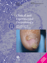

Lin Dermatology & Aesthetic Clinic
兼具學術專業與認真、關懷的皮膚科醫師• 週一至週五：提供早診與晚診（夜診掛號 18:00 - 20:00 截止）。
• 週六門診：上午 09:30-12:00 / 下午 13:00-15:00（晚上休診）。
| 時段 | 一 | 二 | 三 | 四 | 五 | 六 | 日 |
|---|---|---|---|---|---|---|---|
| 早 09:30 | ○ | ○ | ○ | ○ | ○ | ○ | - |
| 午 16:00 | 休診 | 大學 授課 | 休診 | 手術 約診 | 休診 | ○ | 休診 |
| 晚 18:00 | ○ | ○ | ○ | ○ | ○ | 休 | 休 |
|
*週二為林醫師授課時間 (嘉南藥理大學) *週四下午為手術特約時間 專線：06-2385000 (每週二三四五上午開放複診預約) |
|||||||
